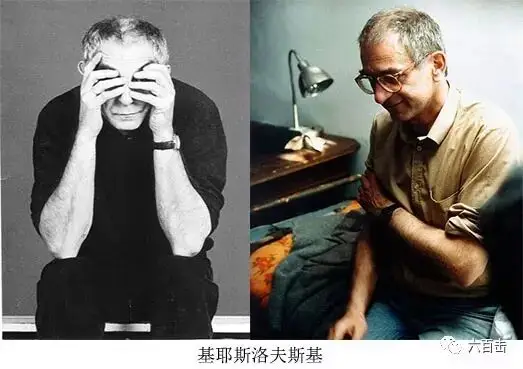
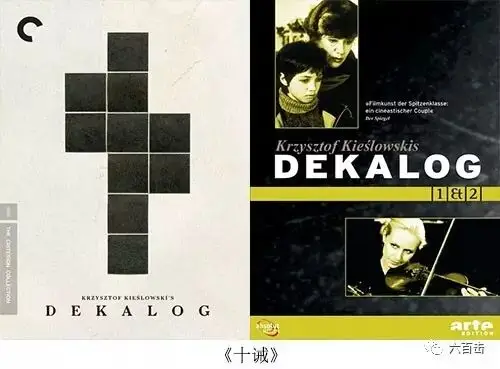
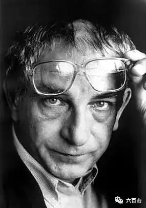
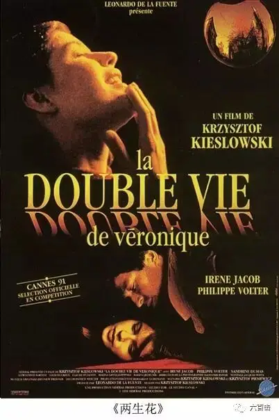
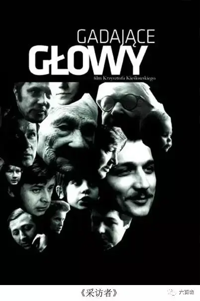
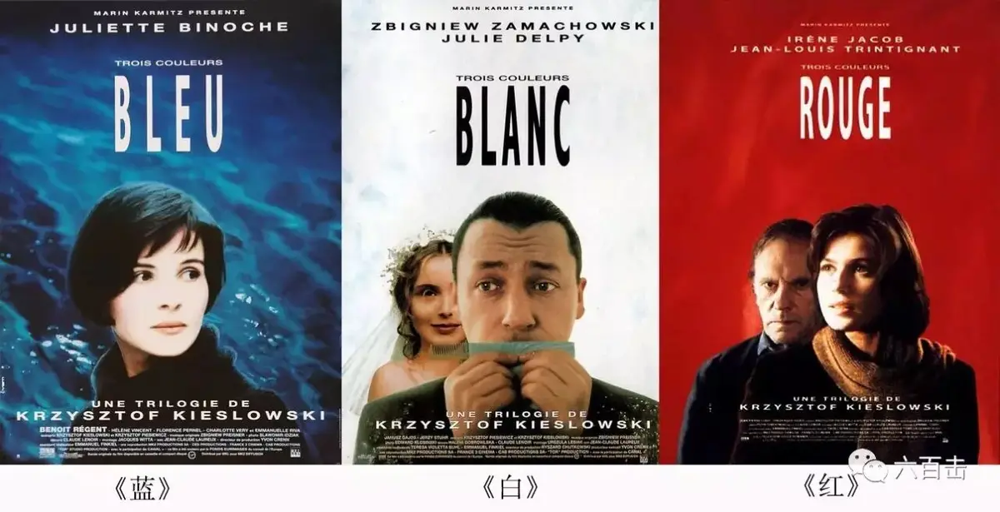
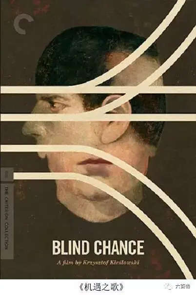

电影失去了它的重要性，在1960年代、1970年代以及1980年代初期，电影是有价值的。而现在，观众们已经不知道自己想看什么了，我们也不知道想要说什么了。
—— 基耶斯洛夫斯基
边听边看效果最佳
记得大学第一次看到基耶斯洛夫斯基的《十诫》时，我觉得他的电影很质朴，他的作品是那种你说不明白为什么但看完会被感动、会去思考的电影，我当时只是觉得他的电影很深刻但是并不是太懂。在去年的上海举行的基耶斯洛夫斯基的影展上，他的合作编剧克日什托夫·皮耶谢维茨一语道出了理解基氏的钥匙，“他电影中最宝贵的特质是真诚”，他的所有电影包含着对每个角色的爱情，他的电影中，对于任何人没有审判，只是想办法了解他。他尊重他的演员，也尊重观众，他只是通过电影去解释一个现象，一个行为，从而让观众了解一个事实，而不是论断，他的电影都有一切伟大电影的特点——就是不给你明确的答案，只是解释一种现象。

实在舍不得将他用焦虑和生命铸造出来的电影用一篇文章草草带过，我也不具备这样的能力。所以，在接下来的两周，我将会为大家依次介绍他举世闻名的《十诫》、《双生花》、《蓝白红三部曲》，我会动手剪辑，再通过图片、文字来介绍基氏这些伟大的作品。今天我们先来一起走进这位深紫色叙事思想家的世界，感受他对世界和对电影那份真诚。
一、为什么要了解基耶斯洛夫斯基
去年的影展上，基氏的合作编剧皮耶谢维茨提出一个有趣的问题，“我更感兴趣的是，为什么基耶斯洛夫斯基的电影在中国会这么受欢迎？” 我认为除了基氏本身的电影魅力，他的创作背景和面临的问题和我们今天的社会非常相似，基耶斯洛夫斯基成长于前苏联思想意识形态控制之下的波兰，在他创作纪录片的时候，是上世纪七八十年代，那个时候面临很多的政治审查，波兰境内并没有言论自由。在之后基氏开始创作故事片的时候，政治戒严逐渐放开，商品、市场经济进入了波兰人民的生活，人们由政治不自由又跌入了商品控制之下的不自由。这些多少与我们国家从改革开放走到今天的经历有很多相像的地方，而一贯敏锐的基耶斯洛夫斯基已经洞察到人们当时普遍的困境，并将镜头对准每个人的内心。

他能够把人生命中不能承受之重从纷繁的日常生活中剥离出来，让人们自己去正视、面对、并寻找答案。而这一点，也是我们中国电影一直所缺少的东西，在我们中国的处境之下，你要去和一个人讨论意义、讨论死亡、讨论可不可以撒谎的时候，你一般都会收获别人的不屑或者道貌岸然的敷衍。他们会用社会中左右逢源、黑白通吃来解决和追求自己想要的东西，他们会机智的揪住你一个月的工资只能勉强糊口的辫子，再用“先填饱你的肚子”的大棒来让你再也不要提这档子话题。而基氏的电影却有这样的魔力，他能够轻而易举的让人们面对终极关怀丧失，道德理性摈弃的事实，让你不得不去顿悟如何抉择才是拯救人类道德理性的本质。他的电影对于今天的我们有极强的现实意义和启迪意义，我们需要走进他。
基耶斯洛夫斯基论我们的爱
“他们在圈子里打转，根本无法获得他们想要的东西。我们已变得太利己，太爱自己，太在意自己的需要，就好像别人消失在背景之中。为我们所爱的人做了许多事情——假设如此——但当我们回顾过去时，我们就会发现，虽然我们已为他们做了一切，但我们却没有精力或时间将他们拥在怀里，跟他们说几句温柔的话，我们没有时间谈论感情。我想这也许是真正的问题所在，我们也没有时间谈论激情，这和感情紧密联系。我们的生活就这样悄悄溜走了”
基耶斯洛夫斯基论自由
“我深信我们并不自由。我们常为某种自由而奋斗，在一定程度上，这种自由，特别是外部的自由，已经得到了------至少在西方，比起东方在程度可就大多了，在西方，你有买块手表或买条自己想要的裤子的自由，如果你确实需要他们，你就可以买。你喜欢到哪儿就可以去哪儿，你有选择居住地区的自由，你可以自由选择生活条件。你可选择在某个社会圈子里而不在另一个圈子里生活。你可以选择在这群人而不在那群人中生活。而在这里，我们就像几千年前一样，一直是我们的感情、生理及生物现象的囚徒。什么更好，什么更好一些，还有什么还更好一些，什么更差，什么更差一些，在这些复杂而且通常是很相对的区分中，我们受到禁锢，我们总想找个办法逃出来。我们经常受自己的激情和感情的束缚。你没法消除它。你拿到去所有国家的签证跟你拿到去一个国家并在那里居住的签证没有什么两样。”

基耶斯洛夫斯基论普遍的孤独
“ 不管人们住在哪里，我想他们普遍都很孤独。我能看出最让人们烦恼的就是孤独，而且在这点上人们最会自欺欺人了-----因为他们不愿意承认他们孤独。他们有重要的事情却没人跟他们谈，这是事实；随着日常生活变得越来越轻松，一些过去曾是很重要的事情，如对话、写信、与另一个人的真正接触等，现在消失了，这也是事实。所有的事情都变得肤浅。我越来越感觉到，虽然人们孤独，但有很多人却想着发财，从而拉开同他人的距离，并以此享受奢华的孤独。他们想让自己住在远离他人的房子里，想去一家没人能坐在他们之上、没人能听到他们谈话的大饭店里，这真是个矛盾”
二、基耶斯洛夫斯基与电影
基氏从小生活坎坷，他的父亲患有肺结核，而他在小的时候得了肺炎，家人为此搬了十几次家，这些也都为他后来电影里的悲观主义埋下了种子。长大后，基氏本来想要从事话剧创作，为了实现这个目标，他想要进入一个好的学校学习。后来基氏决定报考洛兹电影学院，考了三次才成功考入学校，而洛兹电影学院在当时政治审查严格的波兰可以说是一股清泉，这个伟大的电影学院诞生了安杰依瓦依达及扎努西这些伟大的导演，这些人创作了享誉世界的道德焦虑电影。他们可以在学校里自由的观看各种“禁片”，那个时候的创作虽然有审查，但是主要领导是瓦伊达和扎努西，总是会暗中放水，同时，这也带来了另外的好处，大家学会了用象征和隐喻来进行表达。大量的阅片使得基氏的创作受到了很多人的影响，受英格玛伯格曼的影响而客观睿智，受肯.洛奇《老鹰与孩》的影响而质朴充满关怀，当然给基氏影响最多的还是瓦伊达和扎努西。

三、创作历程
早期纪录片
基氏真正意义上的第一部作品是他的毕业作《洛兹小镇》，他在《基耶斯洛夫斯基如是说》中，用“人们忧伤的脸庞，眼中只剩下强烈的毫无意义”这样犀利的话语来形容洛兹，他用纪录片去呈现一种平时无法在银幕上看到的真实，他早期的纪录片与现实生活紧密相连，批判官僚主义、关注社会现实，先后创作了《电车》《星期日音乐家》《照片》《采访者》等作品，而三十多部纪录片创作经历，更是锻造了基氏对电影的综合思考能力，这也为他后面故事片中客观、冷静的表现风格奠定了基础。

因为良心受谴责转向故事片
基氏说“即使是纪录片的镜头，也没有权利进入这个我最感兴趣的主题：个人的私密生活”他在接受法国电视台采访时说，“我宁可去要点买些甘油，刺激演员留下假的泪水。也不愿拍到别人真实的哭泣画面或者真实的死亡画面”，基氏接受不了用别人的隐私和伤痛去创作和表达，所以转向创作故事片，这一态度也足以让那些习惯于消费别人苦难、伤痛甚至死亡的吃瓜群众和无底线媒体汗颜，他们没有对于人基本的尊重。

基氏以极高的创作激情和工作强度先后创作了《影迷》、《机遇之歌》、《双生花》、《十诫》、《蓝白红三部曲》，他忙碌的时候一面剪辑这《蓝》，一面拍摄《白》，同时还在修改《红》的剧本，而体力透支的他在1996年在华沙与世长辞。在故事片的创作上，他放弃了对现实生活的关注，将镜头对准了人的内心。他说，“在戒严期间，我认识到政治并不真正重要。当然，从某种意义上说，他们规定了我们的位置，我们可以做什么，我们不可以做什么，但他们并不真正解决人类的重要问题。他们无力做任何事情或者回答我们一些基本的，必要的人类和人性问题。就生活的真正意义是什么，为何早上要起床等问题而言，是生活在共产主义国家还是在资本主义国家并没有什么区别。政治不回答这类问题”
宿命的情调以及非理性神秘主义倾向成为基耶斯洛夫斯基重要作品的主题，作品带有很强的形而上意味。《影迷》带有很强的自传性，也透露出基氏自己的焦虑，他经常处于怀疑自己的工作是否有意义的折磨之中。《机遇之歌》创造了三段式循环叙事的先例，要早于后面提克威的《罗拉快跑》及杜琪峰《一个字头的诞生》；《十诫》是基氏和皮耶谢维茨共同编织的十个道德困境，是人文主义下的当代警世恒言，此巨作更是震撼了全世界，被评为有史以来最好看的电视连续剧，在烂番茄网上评分为100%；之后的蓝、白、红三部曲更是从个人层面探讨了自由、平等、博爱三个主题。不过可惜的是基氏没有机会完成他最后的构想：基于但丁《神曲》而创作天堂三部曲。

“基氏总是以一个简单的故事，几个寻常的人物，不加矫饰的拍片风格，拍出的一部电影却别人看过之后，犹如刚从一位大哲学家的穷毕业生之作走出的感觉”，基氏故事片创作的态度是真诚的，观察是客观、冷静的，习惯运用表现主义的手法去刻画，擅长运用色彩、隐喻，喜欢用中近景镜头对准每一个平凡的角色，最后都将主题和关注点引到终极关怀之上。而他本人没有也不可能去描绘终极世界，但是却通过爱让我们感受到终极的存在。